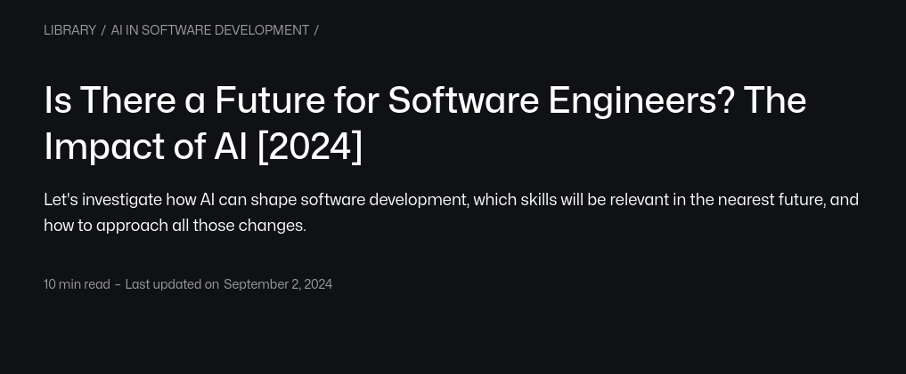
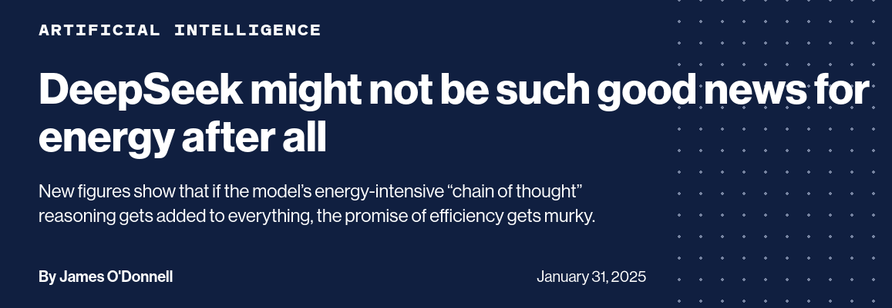
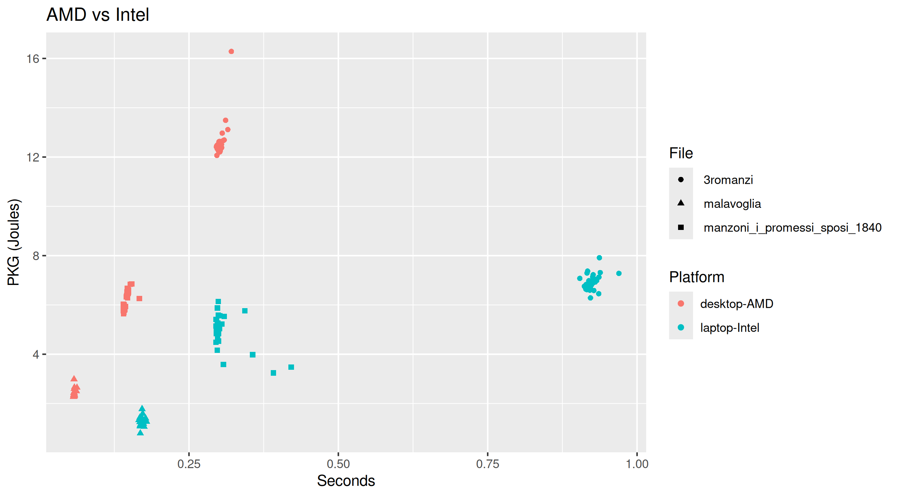
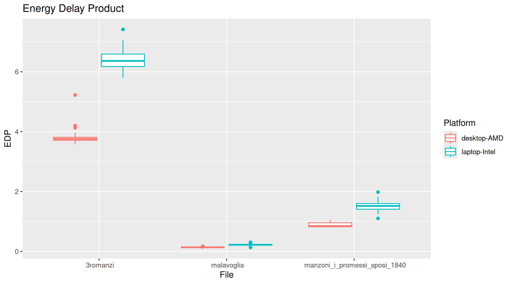
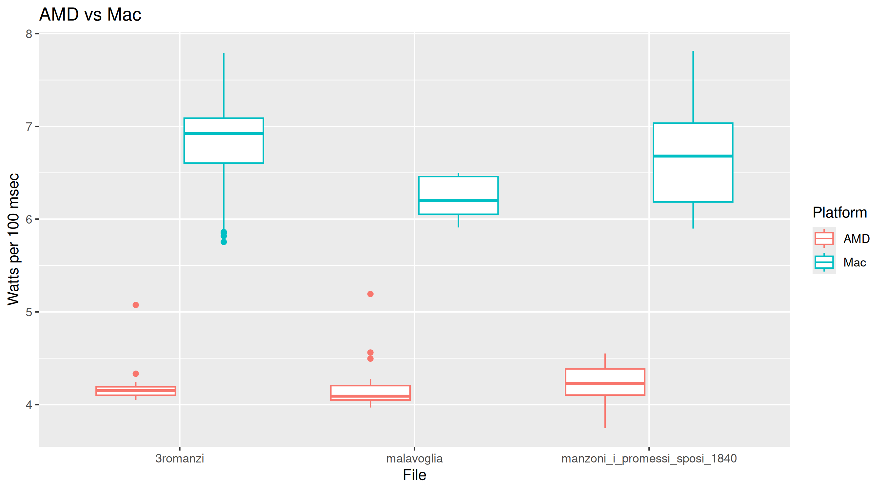
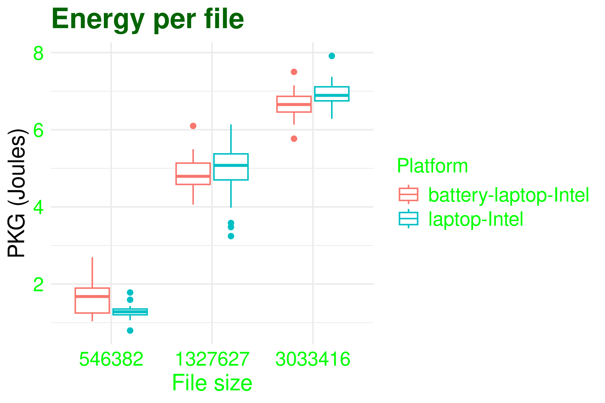
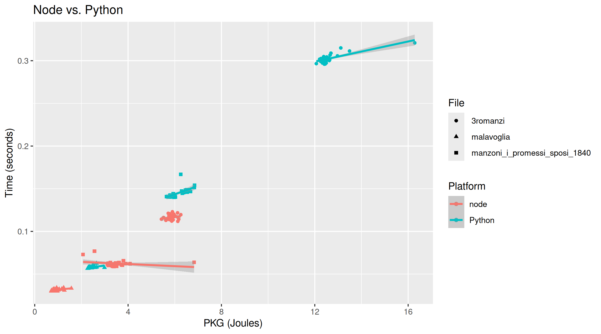
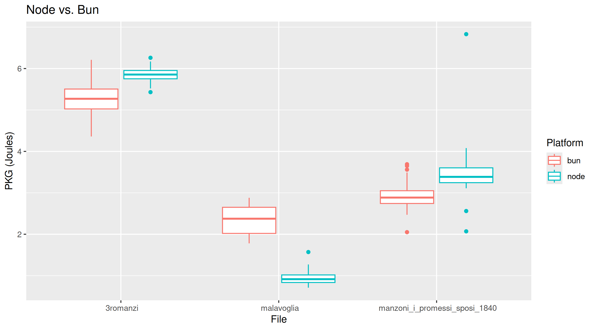
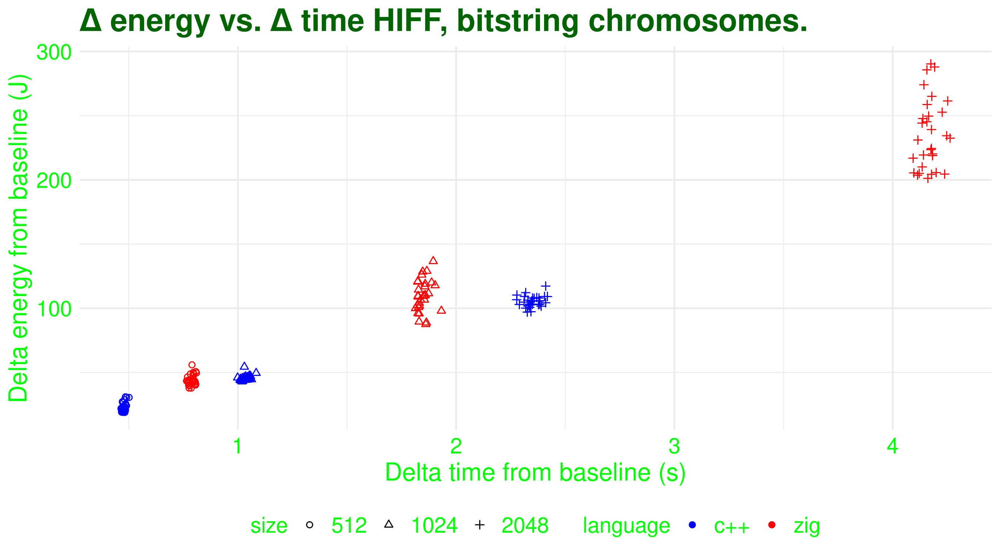

Engineering greener software
SAC'25, Catania
JJ Merelo, university of Granada, Spain, jmerelo@ugr.es
Or, how the history of Sicily can help us save energy in our applications
Gorgias, greek philosopher from Leontini

Nothing exists; even if something exists, nothing can be known about it; and even if something can be known about it, knowledge about it can't be communicated to others.
One's got to try...
Computers need power to operate
Boy, do they need power...
But also...
Moore's law is dead

You can't make applications run much faster
Make them greener
Tutorial organization
Antipasti: Energy/power and all that
Primo piatto: How and where power is spent
Secondo piatto:Measuring energy expenses
Dolci: Making programs greener
System operations draw power
Measured in watts
... And they consume energy
Measured in joules
Energy = power x time

Letter substitution cipher introduced by Greeks

Polybius square letter → 2-number coordinate
Caesar's code is similar
Provenzano, il capo di tutti capi, used a variant of this for his messages
Can be broken by cryptanalisis
Cryptanalisis introduced by Al-Kindi, 9th century
Also reintroduced Greek philosophy to the Muslim world
Muslim Sicily: a hub for Muslim philosophy
Did Sicily open cryptanalysis to the world?
Symbol frequency in Python
def eliminate_whitespace_and_punctuation(text):
translator = str.maketrans(
'', '',
string.whitespace + string.punctuation + '«»“”‘’'
)
text = ''.join(filter(str.isalpha, text.translate(translator)))
return ''.join(
c for c in unicodedata.normalize('NFD', text)
if unicodedata.category(c) != 'Mn'
)
def calculate_frequency(text):
return Counter(text.lower())Analyzing "I promessi spossi"
| Symbol | Frequency | Symbol | Frequency |
|---|---|---|---|
| æ | 1 | p | 30449 |
| k | 3 | u | 36561 |
| y | 8 | d | 38203 |
| w | 16 | c | 48117 |
| j | 22 | s | 56020 |
| x | 139 | l | 57179 |
| z | 7803 | t | 62603 |
| q | 7997 | r | 67736 |
| b | 10036 | n | 74764 |
| f | 10811 | i | 98025 |
| h | 13831 | o | 99056 |
| g | 17556 | a | 118096 |
| v | 23585 | e | 123592 |
| m | 24233 |
Do we know how much energy does it consume?
We need to understand
What are we measuring
How can we measure it
How can we measure our stuff
We do need to measure
What are we measuring
Socket ~= Processor → x cores → y threads
DRAM/Memory
GPUs
Other units: Apple Neural Engine Architecture, for instance.
Cores are not homogeneous
P cores for performance, e cores for (energy) efficiency
Apple Silicon M3 Ultra: 28 p-cores, 8 e-cores
And they are in different states
Operating states: C states
In C0 state (Fully turned on): different P-states change frequency and voltage
Baseline: system does its best to save energy
Processors run machine code instructions
They take different number of cycles and consume a different amount of energy
And they use on-chip caches, instructions decoders and so on
we need our applications to ride this system
And extract as little power from it as possible
Good engineering can help
It's the system that draws energy
You can only measure the whole system
Yet you need to measure a single application
Measure energy drawn from the external plug
Problems: measuring the whole system (hard disk, external graphics card)...
... And synchronization
Good ones can be €€€
Use system APIs and interfaces
Using seudo-registers or system calls to place estimates
IOreport for Apple
Other devices have different interfaces
Running average power limit: RAPL
Prevalent in the Intel world (including AMD)
Provides registers that estimate energy usage
PKG or "package",
includes all on-chip energy consumption
Intel chipsets have more granularity: memory, core/PP0, uncore/PP1, "PSys"...
Measuring energy consumed by an application
Command line tools
Language-specific libraries
Using pyJoules
import sys
from pyJoules.energy_meter import measure_energy
from sacrypt import process_text_v0
@measure_energy
def run_process(process_func, file_path):
process_func(file_path)
if __name__ == "__main__":
run_process(process_text_v0, file_path)
sudo make me a sandwich
$ sudo ./.venv/bin/python bin/sacrypt-energy.py ../data/3romanzi.txt v1
begin timestamp : 1742670844.3934789; tag : run_process; duration : 0.08716917037963867; package_0 : 3239548.0; core_0 : 55554.0; nvidia_gpu_0 : 1150We need a methodology
Use different parameters
Repeat for statistical significance
Analyzing Italian literature
But we're measuring the whole system here
A baseline that eliminates system overhead is needed
We can't do that from the program itself
We need to profile the system doing nothing
And we need a external program for that
Let's check the marketplace
| Command | Platforms | Attaches to command |
|---|---|---|
pinpoint | RAPL, IOReport for M1, others | Yes |
perf | Linux | No |
pumas | Mac | No |
Let's profile... nothing!
$ sudo pinpoint sleep 1
Energy counter stats for 'sleep 1':
[interval: 50ms, before: 0ms, after: 0ms, delay: 0ms, runs: 1]
10.64 J nvml:nvidia_geforce_rtx_4070_super_0
22.17 J rapl:pkg
1.00109098 seconds time elapsed Choices for greener algorithms: many moving parts

Machine/OS/Hardware platform
Language
Language-specific optimizations
Some rules of thumb for energy savings
Hardware: several orders of magnitude
Language 2-3 orders of magnitude
Program: 1 order of magnitude
Trade-off energy/time
At the hardware/language level, at least
There's no free lunch, but we can have very cheap lunch at the program level
Exactly the opposite than Archimedes

AMD desktop vs. Intel laptop
Energy-delayed product: worth the while to trade?
What happens to my Mac?
It's complicated
Using pumas:
getting Watts
Even so...
We need better multi-platform tools
So that we can compare apples to apples
Back to the laptop: should I pull the plug?
Many other possibilities for running programs
E cores: run as a daemon or background task
Use command line or Mac-specific libraries
Possibly good EDP
What about GPUs?
You will need specialized libraries/languages
In many cases, they are very energy-efficient
But CPU-running code might ruin any saving
Specialized "Neural" units
Apple Neural Architecture
You need specialized libraries to use it
Potentially, huge savings
Can we beat Python
JavaScript is a very popular language
% Copilot rewrite this in
node.js
Leaving Python in the dust
What about different interpreters for JavaScript? node vs. bun
Recursivity is a technique of solving a problem by having a function call itself
Archimedes introduced it to compute the perimeter of the circumference while in Syracuse
Involves language specifics in function call and returns
Hierarchical if and only if
Used in benchmarks for evolutionary algorithms
Is the classical C++ better than the up-and-coming zig?
Visit poster session next Wed. Spoiler...
High level/interpreted languages >> JIT interpreted languages >> VM/bytecode languages (Java) >> OO/Procedural low-level languages (C++, C) >> Functional languages
Different levels: it's complicated

You can change how you run/compile a program
Non-zero impact with no change in code
Result can be counter-intuitive
Always measure and compare
Eliminate debugging/profiling information when compiling
Less use of memory, less CPU
This should be obvious, but scientific computing is rarely following best practices
Use processor-specific machine instructions
g++-14
-march=native
-std=c++2a
-Wall
chromosomes.cc generate_chromosomes.cc -o chromosomesUse specific compiler/language standard versions
g++-14
-march=native
-Ofast
-std=c++17
-Wall
chromosomes.cc generate_chromosomes.cc -o chromosomesOther VMs/compilers/interpreters have runtime option
They are specific, need to check those that allow options mentioned above
Always check versions for power consumption
Rule of thumb: latest versions improve efficiency ⇒ lower consumption
Your mileage may vary if there's a change of standard
Or if it's C++
Know your language
Using language-specific patterns can improve performance
Functional constructs are usually (much) faster
Eureka!
def process_text_v0(file_path):
text = read_file(file_path)
cleaned_text = eliminate_whitespace_and_punctuation(text)
return calculate_frequency(cleaned_text)
def process_text_v1(file_path):
with open(file_path, 'r', encoding='utf-8') as file:
frequency = Counter(chain.from_iterable(line.lower() for line in file))
for symbol in list(frequency.keys()):
if not symbol.isalpha():
del frequency[symbol]
return frequency